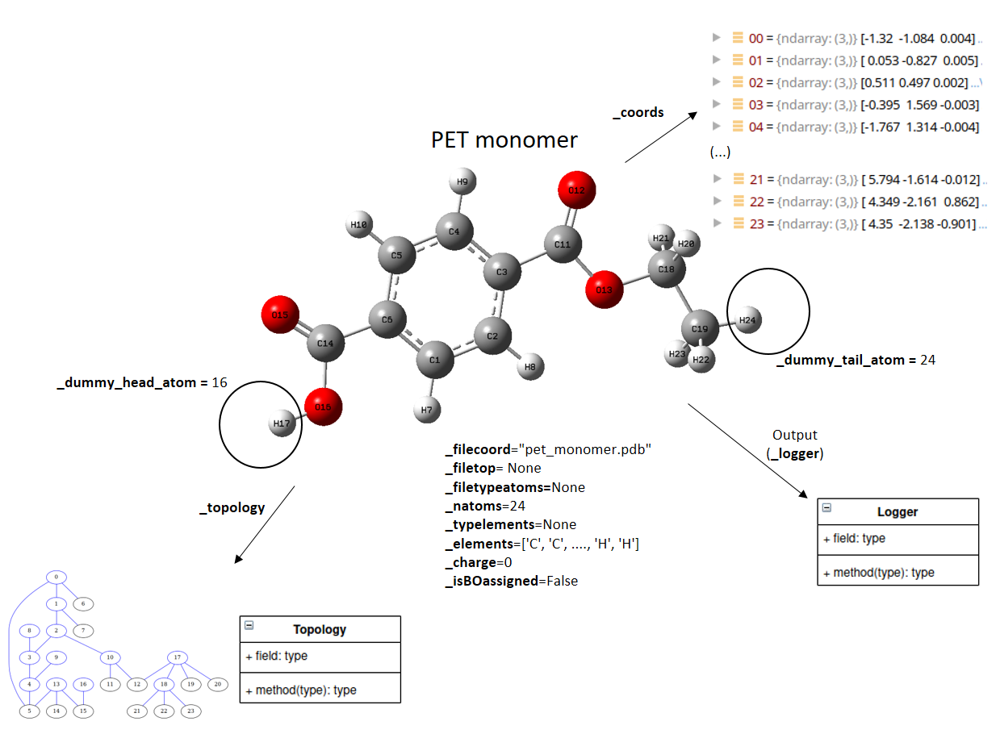
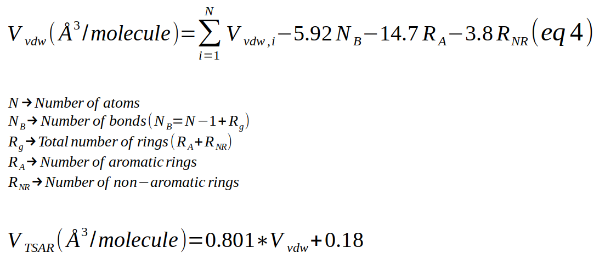

Segment Object¶
Overview¶
Segment object is used to represent a molecular structure
A PET monomer represented as a Segment:
{kind=link}
The attributes of the Segment object are summarized in the figure.
Example¶
# This generates the example of the figure
s1 = Segment(filecoord="../data/pet_1mon_aa.pdb")
# This creates a empty segment
s1 = Segment()
# Creating a segment for an ethylene monomer
s1 = Segment(natoms=2, xlist=[0.0, -0.002], ylist=[0.765, -0.777], zlist=[0.0, 0.0], elementlist=['C','C'])
Attributes¶
- _filecoord: str
Path to the coordinate file used as input.
- _filetop: str
Path to the topology file used as input. If is None, the topology is guessed.
- _filetypeatoms: str
Path to a file containing the type atoms. (see above the format of this file)
- _logger: logger
LOGGER TO DO
- _natoms: int
Number of atoms.
- _coords: ndarray[natoms,3] type=float64
Coordinates of the atoms
- _topology: topology
Topology object
- _typeelements: ndarray[natoms] type=str
Type of elements read from self._filetypeatoms
- _elements: ndarray[natoms] type=str
Name of the elements
- _charge: int
Net charge of the segment
- _isBOassigned: boolean
If it is
Truethe order bonds have been assigened using the algorithm reported in https://doi.org/10.1186/s13321-019-0340-0- _dummy_head_atom: integer
Index of the atom acting as dummy head atom to mimic polymer chain. The value is -1 when is not used.
- _dummy_tail_atom: integer
Index of the atom acting as dummy tail atom to mimic polymer chain. The value is -1 when is not used.
Methods¶
This function assigns bond orders to the bonds according to the algorithm reported in: |
|
Calculation of the van der Waals volume using the method reported by Zhao et al. |
|
Calculate the center of geometry of the current coordinates |
|
Calculate the center of mass of the current coordinates |
|
It checks the length of the parameters passed through the constructor. |
|
New coordinates of the atoms accordingly to random Euler angles. |
|
Get the coordinates of the segment |
|
Wrapper to load the structure from disk. |
|
Read the coordinates from a gro file. |
|
Read thecoordinates from a pdb file. |
|
Read coordinates and topology from a SDF file |
|
Try to set up the topology reading a PDB file. |
|
Try to set up the topology reading a XYZ file, the bonds are guessed. |
|
Read the coordinates from a xyz file. |
|
Setup the total charge of the segment |
|
Wrapper to load the topology from disk. |
|
Set the type of atoms in the segment (self._typeelements) |
|
Translate the segment along the vector v. |
|
Write the segment to a XYZ file |
API¶
-
class
chiripa.Segment.Segment(name, filecoord=None, filetop=None, filetypeatoms=None, natoms=0, xlist=None, ylist=None, zlist=None, elementlist=None, guesstopol=True, dummy_head=- 1, dummy_tail=- 1)[source]¶ Bases:
objectClass to represent molecules
There are two ways to build a Segment object:
Segment(filecoord=’ethylene.pdb’)
Segment(natoms=2, xlist= [], ylist=[], zlist = [], elements = [])
If filecoord is present, the paremeters natoms, xlist, ylist, zlist and elementlist are ignored. Otherwise, these parameters must be consistent.
if filetop is not given, then the topology is guessed.
if filetypeatoms is present, the types assignation is done according to the file. The order of the atoms must be the same that the order in the coordinates and topology files. The format of this file must be the following:
<Number> <Atom> <type_of_atom> 1 C c3 2 C c3 3 C c3 ... 14 H hc
Warning
Be careful when use np.transpose function. This function seems to change the order of the array to “Fortran-type” instead to C-Order. If use np.transpose you will use np.ascontiguousarray
Example:
a = np.tranpose(b) –> a in Fortran order irrespective of the order of C
a = np.ascontiguousarray(np.transpose(b)) –> a in C order
This issue is important when use mode=”c” in pyx files for Cython
Warning
For big molecules (>1000 atoms) deactivate the guessing of topology (guesstopol=False)
-
__init__(name, filecoord=None, filetop=None, filetypeatoms=None, natoms=0, xlist=None, ylist=None, zlist=None, elementlist=None, guesstopol=True, dummy_head=- 1, dummy_tail=- 1)[source]¶ Constructor of a Segment object
- Parameters
name (str) – Name of the segment
filecoord (str) – Path of the coordinates filecoord (Format: PDB, GRO, XYZ)
filetop (str) – Path of the topology (Format: PDB)
filetypeatoms (str) – Name of the file containing the matching between atoms and atomtypes. This is used mainly to assign the reevaluated distances by Okuwaki_ et_ al_. (Table 2)
natoms (int) – Number of atoms
xlist (list, float) – Float numbers x component of the coordinates (in angstroms)
ylist (list, float) – y component of the coordinates (in angstroms)
zlist (list, float) – z component of the coordinates (in angstroms)
guesstopol (bool) – If True activate the guessing of topology based in a distance algorithm.
dummy_head (int) – Index of the atom acting as dummy head atom to mimic polymer chain
dummy_tail (int) – Index of the atom acting as dummy tail atom to mimic polymer chain
-
assign_bond_orders()[source]¶ This function assigns bond orders to the bonds according to the algorithm reported in:
“Automated simultaneous assignment of bond orders and formal charges” Ivan D. Welsh and Jane R. Allison J. Cheminform (2019) 11:18
https://doi.org/10.1186/s13321-019-0340-0
The function uses the external software
indigo-bondorders(located in thirdparty/indigo-bondorder). This code is compiled and installed in thirdparty/indigoxWarning
The structure to assign bonds needs to have all hydrogen bonds correctly placed. United atom models do not work with this function.
-
calc_vdw_volume_VABC()[source]¶ Calculation of the van der Waals volume using the method reported by Zhao et al.
“Fast Calculation of van der Waals Volume as a Sum of Atomic and Bond Contributions and Its Application to Drug Compounds”, J. Org. Chem. 2003, 68, 7368-7373 https://pubs.acs.org/doi/10.1021/jo034808o.
The VdW radii and volume are taken from element_vdw_vmd_radius_bondi and element_vdw_vmd_volume_bondi, respectively.
The formula (4) of the article will be used in this function:
- Returns
(tuple) –
tuple containing:
volume_vdw(float) Van der waals volume using equation 4 in (angstroms^3/molecule).volume_tsar(float) Van der waals volume using equation 6 in (angstroms^3/molecule).
-
center_of_geom(atomlist=None)[source]¶ Calculate the center of geometry of the current coordinates
- Parameters
atomlist (list) – Index of the atoms to calculate the center of geometry. If
Noneall atoms are used- Returns
cog– ndarray[3] of float64. Coordinates of theSegmentgeometry center
-
center_of_mass(atomlist=None)[source]¶ Calculate the center of mass of the current coordinates
- Parameters
atomlist (list) – Index of the atoms to calculate the center of mass. If
Noneall atoms are used- Returns
com– ndarray[3] of float64. Coordinates of theSegmentcenter of mass
-
check_parameter_consistence()[source]¶ It checks the length of the parameters passed through the constructor.
The length of the x, y, z and element arrays must be equal to the number ot atoms. If there is not consistency raises a ValueError otherwise return True.
- Returns
True – if all parameters are consistent
-
euler_orientation(iseed=None)[source]¶ New coordinates of the atoms accordingly to random Euler angles. There are many definitions of the Euler angles (see: https://en.wikipedia.org/wiki/Euler_angles)
The definition here used is that given in:
MATHEMATICAL METHODS FOR PHYSICISTS SEVENTH EDITION George B. Arfken, Hans J. Weber, Frank E. Harris pag: 140-142

- Parameters
iseed (int) – Seed for the pseudo-random number generator. If
Nonethe seed is created from the current system time otherwise a deterministic random data using theiseedvalue is expected- Returns
euler– , list of floats, \({\alpha}\), \({\beta}\) and \({\gamma}\) values for the Euler angles in radians
-
get_coords(atomlist=None)[source]¶ Get the coordinates of the segment
- Parameters
atomlist (list) – Index of the atoms to return. If
Noneall atoms are returned- Returns
coords– ndarray[natoms, 3], natoms = self._natoms or len(atomlist)). Coordinates array
-
load_from_disk(path)[source]¶ Wrapper to load the structure from disk. Allowed files are pdb, xyz and gro files. The format of the file is taken from the extension of the file. If this extension is unkown then the method raises an exception.
- Parameters
path (str) – Path to the file in the disk
-
printerror(msg1)[source]¶ Print the error message msg1 to the logger
- Parameters
msg1 (str) – Message error
-
read_gro_from_scratch(gro_path)[source]¶ Read the coordinates from a gro file. It checks if the file exist
- Parameters
gro_path (str) – Path to the file in the disk
-
read_pdb_from_scratch(pdb_path)[source]¶ Read thecoordinates from a pdb file. It checks if the file exist
- Parameters
pdb_path (str) – Path to the file in the disk
-
read_sdf_coordtopo_from_scratch(sdf_path)[source]¶ Read coordinates and topology from a SDF file
- Parameters
sdf_path (str) – Path to the sdf file
-
read_topology_from_gro(path)[source]¶ Try to set up the topology reading a XYZ file, the bonds are guessed.
- Parameters
path (str) – Path to the XYZ file
-
read_topology_from_pdb(path)[source]¶ Try to set up the topology reading a PDB file. The “CONECT” section is used to yield the connectivity of the molecule, if present. Otherwise, the bonds are guessed.
- Parameters
path (str) – Path to the PDB file
-
read_topology_from_xyz(path)[source]¶ Try to set up the topology reading a XYZ file, the bonds are guessed.
- Parameters
path (str) – Path to the XYZ file
-
read_xyz_from_scratch(xyz_path)[source]¶ Read the coordinates from a xyz file. It checks if the file exist
- Parameters
xyz_path (str) – Path to the file in the disk
-
set_charge(charge)[source]¶ Setup the total charge of the segment
- Parameters
charge (int) – Total charge of the segment
-
set_topology_from_disk(path)[source]¶ Wrapper to load the topology from disk. Allowed files are pdb, xyz and sdf files. The format of the file is taken from the extension of the file. If this extension is unkown then the method raises an exception.
- Parameters
path (str) – Path to the file in the disk
-
set_typeatoms(filetypeatoms)[source]¶ Set the type of atoms in the segment (self._typeelements)
- Parameters
filetypeatoms (str) – File containing the type of atoms
<Number> <Atom> <type_of_atom> 1 C c3 2 C c3 3 C c3 ... 14 H hc
{kind=link}
{kind=link}